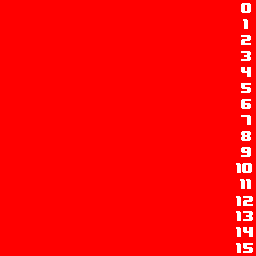
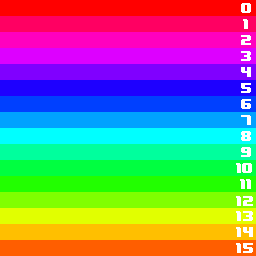
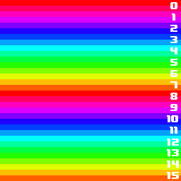
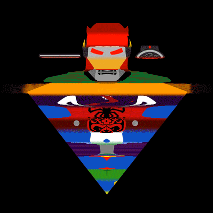
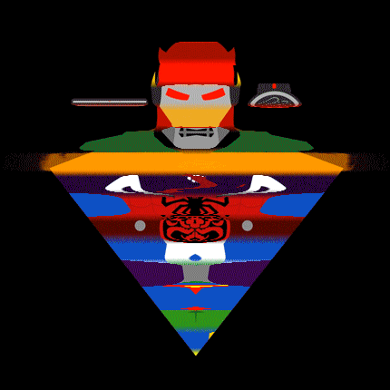

Timeshifter
A tool to make a Timeshift effect on animations/gifs/videos.
TimeShifter
What does timeshift means?
The idea behind timeshif is to shift the content of the gif/animation/video by one frame every slice, the amount of slices can be controlled to create different effects. Take a look at the following examples.
Example
 
Input: 16 frames, cycles trougth the rainbow (256x256px)
Output: 16 slices, 16px per slice.
Slices
By default timeshifter will make as many slices as frames in the animation, but you can alter it that to create different effects.

32 slices, 8px per slice || 64 slices, 4px per slice


128 slices, 2px per slice || 256 slices, 1px per slice
Practical Examples
Morph
Notice how each slices is basically running the animation in the same order and place, just shifted.
 


The first one is the original, the second has 1px slices, while the 3rd and 4th have 16 and 32 slices respectively
Spin
Things spinning make good subjects, even more if they are already cycled.
Compile
First install support for Libpng development (which timeshifter relays heavily on).
#ubuntu
sudo apt-get install libpng12-dev
Simply compile using gcc, don't forget to add the -lpng flag.
gcc main.c -lpng -o timeshifter
The executable timeshifter file is ready to use.
If you compile it for windows or Osx, or other linux distributions please ping with how you did it to update the instructions.
Install in my way:
I have a folder for this kind of small programs and scripts which I added to the execution path in .bashrc, if that's not you favorite thing in the world please tell me and I can add the ./configure & make & sudo make install files to the repo(which i frankly feel it's too much for a simple main.c file).
The repo comes with a useful install.sh script that you can use to compile, install and update timeshifter and timeshifter_core in the ~/.bin directory
./install.sh Compile and Installs Timeshifter Usage: install.sh [-options] Where options can be -c Compile timeshifter_core -u Copy the executables to ~/.bin (run it again when updating to a new version) -e Adds the export line at the end of the .bashrc sou you can run it everywhere
For a first install just run:
./install -cue
If you are updating the package:
./install -u
Usage
Timeshifter is splitted in 2 files:
- Timeshifter(the bash): A bash script that handles input(as gifs) and creates the necesary png files for the core Ansi C program, it also take the output png files and create gifs or animations.
- Timeshifter Core: A highly optimized Ansi C, that does the heavy lifting it only receive and input folder with pngs, and create an output folder with pngs.
sudo apte-get install imagemagick
Use cases
Create a timeshift from a Gif, the -v makes it verbose, the -a opens a window at the end with animation.
timeshifter -v -a the.gif
Create timeshifted gif from a gif, the -g 4 makes a gif with a delay of 40ms between each frame
timeshifter -v -g 4 the.gif
Sometimes the gif is to long and is very slow to convert the gif to single pngs everytime you test, use -e <folder> to extract it just once and then just specify the extracted folder as the source.
timeshifter -v -e extracted/ the.gif timeshifter -v -a -o the_gif/ extracted/
Create timeshifted gif from a gif, the -g 4 makes a gif with a delay of 40ms between each frame
timeshifter -v -g 4 the.gif
Support or Contact
Having trouble with Pages? Check out our documentation or contact support and we’ll help you sort it out.